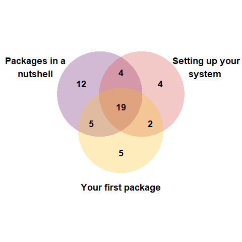

Package Development Modules

Why create Package Development modules?
Forwards have delivered face-to-face one-day workshops in Package development, supported by a grant from the R Consortium, for several years. These are heavily based on the R packages book by Hadley Wickham and Jenny Bryan. These have worked well but our reach is limited because only those with access to teaching facilities can deliver the teaching and only those able to attend a face-to-face workshop can benefit from it. This misses a lot of people! Recently, we have been modularising our materials into one hour long workshops that can be delivered online or in person. We hope this makes the material more usable to teachers and learners alike.
Some module design principles
By December we had begun work on our module design principles. Just like the face-to-face-workshops, the modules would teach package development using devtools in RStudio. Our aim is to provide workflows to help people get started rather than an exhaustive understanding of the details (you can see Writing R Extensions for that).
We wanted the collection of modules to be relatively short (~1 hr), ‘stackable’ and easy for others to use. We thought each module should:
- be approximately 1hr
- be discrete (standalone) but link to other modules
- have specified prerequisites and learning objectives
- be a complete resource for teaching (a person should be able to teach themselves from the material) and include tutor notes
- have a set of Rmd slides with comprehensive alt text and speaker notes
- have slides with minimal content but detailed speaker notes
- use live coding, (minimise ‘lecturing’); include additional exercises for the speedy
Our Progress
In January, Mine and Emma set about developing a module template and the first three modules. We limited tickets to 40 per workshop to enable us provide enough trouble-shooting help and allow some discussion.
The slide template uses xaringan, xaringanthemer and xaringanExtra.
The three modules developed are:
- Packages in a nutshell which covers where packages come from, where they live on your computer, package states and package components
- Setting up your system which covers set up for developing an version controlled R package using RStudio, Git and GitHub
- Your first package which walks you through making a minimal version controlled package linked to a remote repository on GitHub using the
devtoolsapproach.
Online Workshops!
We delivered our first three modules over consecutive days in February (15th, 16th and 17th) to a great bunch of people. There a total of 51 different people taking the modules and we were expecting most to do all three. However, only 19 chose to do all three and 21 people did just one. Perhaps a modular approach helps people tailor training to their needs and availability?

We’re delighted that at least one of our participants, Melissa Wong, has now released a package on CRAN! The package, pomcheckr, implements the method described at UCLA Statistical Consulting for checking if the proportional odds assumption holds for a cumulative logit model.
Next steps
The modules we are working on now are Package Documentation and Package Testing. We also want to refine our first three modules then record them when we deliver them next. Watch this space for the next set of workshops! But if you want to use the materials yourself, please go ahead! And feel free to get in touch about doing that.